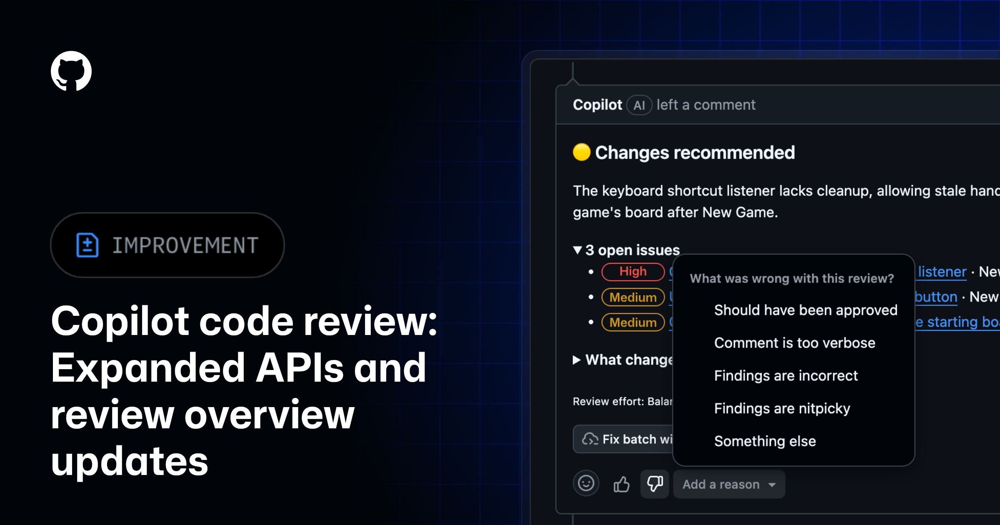

AI Intelligence Daily · 2026-11-08（周日）
统计窗口：2026-11-07 08:00 → 2026-11-08 08:00（上海）· 事实与判断分区 · 国内/国际双轨 · 11-07 全日 8 档快讯均为 SILENT（无公开快讯正文）· 本报吸收 near-miss / 成稿漏收交评项 · 一线 Desktop/Work Agent 新上线 = 3（MiniMax Desktop 3.1.11 · GitHub Copilot CLI 1.0.107 · Factory Droid 1.6.0） · npm：codex 0.167.0（alpha 0.169.0-alpha.3）/ claude-code 2.1.319 / codebuddy 2.181.0 / kimi-code 2.5.2（canary 2.6.0）/ minimax-code 0.7.6 / dsh 0.2.2-rc.1（RC）/ agent-desktop 1.2.0 / @factory/cli 1.6.0 / @github/copilot 1.0.107（prerelease 1.0.108-1）· Desktop：ZCode 3.17.2 · MiniMax CDN+changelog 3.1.11 · Kimi Desktop 1.3.2 · CodeBuddy 2.181.0 · Antigravity CLI 1.5.3 · agent-desktop ★18,859 · dsh-superagent-prototype ★20,815 · DeepInfer ★25,606 · FlashProve ★957 · Hyra-results ★216 · opencode ★225,299 · servers ★91,855
今日一句话判断
周六快讯全天 SILENT 之后，今日窗的主线是交互与编排层补课：Cursor 双向语音通话（昨日窗成稿漏收）与 Amp Spaces 多 Agent 编排宿主（昨日窗交评）把控制面从打字推进到语音和队长席；同窗 MiniMax Desktop 3.1.11 changelog 追上完成国内一线 Desktop 确认发船，GitHub Copilot CLI 1.0.107（沙箱扩展 / MCP cwd）与 Factory 1.6.0（/side）构成 CLI/Desktop 点版本带；ChatGPT dots 获官方账号转发的收件箱验证码代填，则把委托登录写进产品。 desktop_shipping=3。对你两条主线：多 Agent 队长席编排与语音 / OTP 委托的同意粒度（一次 vs 永远）同时变成选型问题；Antigravity CLI 1.5.3 的沙箱环境污染修复提醒：沙箱内命令不得改写沙箱外持久终端的环境。
专栏一｜新闻
本栏结构：
- 国际头条：Cursor Voice Chat with Agents（昨日窗成稿漏收补录；Grok Voice；IDE / web / iOS）
- 国际头条：Amp Spaces（昨日窗交评补录；队长席编排多 Agent + 团队同空间）
- 国内头条：MiniMax Agent Desktop 3.1.11（CDN 昨窗已发、changelog 本窗追上；desktop_shipping）
- 国际中栏：ChatGPT dots 可用已连接收件箱中的登录验证码代为登录（@ChatGPT 转发确认）
- 国际中栏：GitHub Copilot CLI 1.0.107（昨日窗漏收补录；desktop_shipping）
- 国际中栏：Factory Droid CLI+Desktop 1.6.0（本窗点版本；desktop_shipping）
- 国际短讯：GitHub Copilot code review API 管理与综述更新（RSS 落本窗）
- 国际短讯：Antigravity CLI 1.5.3 沙箱环境污染修复 + 持久终端 ID 路径遍历硬化
- 不升格：OpenAIDevs Showcase/credits · Copilot CLI 1.0.108-1 prerelease · ChatGPT Desktop 第三方构建号 26.1103.41825（无官方稿）· Codex 0.169.0-alpha.3 · kimi-code canary 2.6.0 · Qwen teaser 无权重/API · dsh 仍 RC · ZCode 仍 3.17.2 · agent-desktop 仍 1.2.0 · StepCode 仍 0.1.7 · Qoduck stealth（仅 Web、身份未披露 → 交话题）
排序依据：重要度 → 用户相关性 → 时效。昨日窗已发生、Daily 11-07 成稿漏收的条目作今日 NEW 补录，时间按真实发布时间书写，不改写到今日。
1. Cursor：Voice Chat with Agents——与 Agent 实时双向通话（昨日窗成稿漏收补录）
强A · NEW（昨日窗内已发生、Daily 11-07 成稿漏收补录） · 国际 · B/C · Voice / Agent 控制面 · watchlist **209** · changelog **Nov 6, 2026** · **非 Desktop shipping**
发生了什么（事实）
- 官方 changelog：cursor.com/changelog/voice-chat（Nov 6, 2026）；文档：cursor.com/docs/agent/voice-chat。
- 可与 Agent 进行实时语音通话：口述改动、询问 Agent 正在做什么，并在工作推进时听到更新。覆盖 Agents Window、IDE、web、Cursor for iOS。
- 启动：Agent 空闲且输入框为空时，点击原 Send 位置旁、与听写麦克风相邻的波形按钮「Start voice chat」。iOS 可用 「Hey Siri, call Cursor」 对新 Agent 发起通话，并在锁屏 Live Activity 上静音/挂断。
- 语音层负责听、答，并把编码工作交给当前聊天中的 Agent；Agent 运行期间仍可继续对话（问 diff、查 run、检索此前消息与通话、在同一 Project 的多个 worker 间切换）。编码 Agent 也会自己播报简短进度，完成后给一句话，而不是朗读整段书面回复。
- Powered by Grok Voice；Voice settings 可选 Ara / Eve / Leo / Rex / Sal 等。changelog 写明：开启 Privacy Mode 时，voice chat zero data retention。
- 与听写分离：早期版本所称 Voice Mode 仍是把语音转成输入框文字（IDE 快捷键仍为
Cmd+Shift+Space）；Voice Chat 是 Agent 开口回答的双向通话。 - 11-07 Daily 已巡检 Cursor changelog 顶条，但成稿未收录。本窗官方 X
@cursor_ai未见新原创发船帖。changelog 页 OG 为站点默认图 → 不配图。
我的判断
- 强A。把 Agent 控制面从「打字 / 听写」推进到「边跑边通话」，并且明确与 dictation 拆品类——对 Work Agent 的人机回路、移动端唤起和隐私模式（ZDR）都是产品级信号，而不是皮肤级麦克风按钮。
- 语音后端绑在 Grok Voice：选型时要把供应商语音链路、Privacy Mode 与现有模型路由当成同一套约束，而不是「本地 ASR 插件」。
往后看
- 实机：多 worker 切换、通话检索、iOS Siri 深链的权限提示；Privacy Mode 是否覆盖全部语音元数据。
- 是否出现非 Grok 的企业语音提供方，或把通话记录晋升为可审计的 session 记忆。
对智能体互联网
- 相关。 远程/移动唤起（Siri → 新 Agent）是发现与会话建立的新入口；委托链上要能区分「听写输入」与「语音会话权」。
对 Work·Agent 引擎
- 强相关。 (1) 语音控制面与编码 Agent 分角色（voice agent 听答 + coding agent 做事并短播报）；(2) 空闲+空输入才露出通话按钮，避免与发送/听写抢入口；(3) Privacy Mode = 语音 ZDR 的产品开关。
建议动作
- 对照自有 IDE/移动端：听写与双向通话是否应分两个入口、两套同意。
- 评估「Agent 工作时继续对话 / 播报短进度」对 timeline 与通知的压力。
- 若走企业语音：把 ZDR/Privacy Mode 写成可验证开关，而不是文档口号。
来源：Voice Chat changelog · Voice Chat docs
2. Amp Spaces：一个队长 Agent 负责生成并协调多个线程（昨日窗交评补录）
强A · NEW（昨日窗内已发生、快讯交 Daily 补录） · 国际 · B/C/E · 多 Agent 编排宿主 · watchlist **210** · 官方新闻页 **November 6, 2026** · **非 Desktop shipping**
发生了什么（事实）
- 官方：ampcode.com/news/spaces（November 6, 2026）。
- Space 是与单个 Agent 的对话，其职责是为你生成并协调其他 Agent：不再由人手工创建/组织线程。官方自称这是更高一层的多 Agent 工作方式，并用「坐在船长席、而不是蹲在战壕里」作比喻。
- 团队协作被迁进同一空间：官方写到他们发现自己不再去 Slack，而是把视频通话和讨论放到 space 里；需要说话时用 comments，准备好后再 tag 进 Amp。
- 文内三个自用例子：(1) 用名为「Spaces v1」的 space 开发 Spaces 本身，反馈/缺陷/想法由队长 Agent 委派到各线程；(2) 用一个 space 完成 service accounts 上线——滚动发布、监控 X/Slack/缺陷、修 bug、发邮件与退款，并持续盯用户问题与系统健康；(3) 安全审查：把代码库拆成 16 个区域，各开线程审查，另开线程核验发现，并在 space 里保留综述产物供人跟踪。
- 入口：侧栏 Spaces 区的
+，设置标题与项目，再告诉 Agent 要做什么。 - 配图取自官方封面
spaces-cover.avif（已转存为站点 JPG，非 AI 生成）。
图 1 · Amp Spaces 官方新闻封面 · 来源：ampcode.com/news/spaces
我的判断
- 强A。这是把「多线程 Agent」收成显式队长席（coordinator）的产品化，而不只是并排开几个 chat。对你的 Agent Loop / Harness / 多租户工作区，它给出一个可对照的交互原语：人只跟队长说话，队长负责派工、汇总和跨线程产物。
- 官方例子把监控、退款、安全审查都放进同一 space——判断：权限与审计边界会比单线程 Agent 更难画；这是长期信号，不是周六营销贴。
往后看
- 队长 Agent 的权限是否默认继承所有子线程工具；视频通话/评论与 Agent 委派的审计日志是否分开。
- 与 Cursor Projects 多 worker、Copilot 应用内 projects、Claude 云会话的对照。
对智能体互联网
- 强相关。 队长席是「Agent 服务网络」里的编排节点：发现、委派、回收结果需要身份与授权作用在子 Agent 上，而不是只作用在会话发起人。
对 Work·Agent 引擎
- 强相关。 (1) coordinator 原语：spawn + coordinate threads；(2) 空间同时承载人—人沟通与人—Agent 委派；(3) 安全审查类任务的「分区线程 + 独立核验线程 + 综述产物」可直接做成 Harness 模板。
建议动作
- 把「队长席 / 子线程 / 综述产物」映射到自有 Cloud Agent 工作区模型。
- 预先设计子 Agent 工具权限的默认收缩（尤其是发邮件、退款、写生产）。
- 不要把 Space 理解成又一个 chat tab。
来源：Spaces
3. MiniMax Agent Desktop 3.1.11：changelog 追上 CDN，确认 live voice typing / 浮动布局 / Windows Chrome 登录导入
强A · NEW（CDN 昨窗已发、changelog 本窗追上；快讯交评补录） · 国内 · B/C · Desktop 发船 · watchlist **211** · changelog 顶条 **v3.1.11 — 2026-11-07** · CDN Win **2026-11-06T08:01:59Z** / Mac **2026-11-06T08:44:41Z**（= 11-06 16:01 / 16:44 CST）· **desktop_shipping=1**
发生了什么（事实）
- 官方 changelog：agent.minimax.io/docs/changelog 顶条现为 「v3.1.11 — 2026-11-07」。11-07 Daily 截稿时 CDN 已是 3.1.11，但 changelog 仍顶 3.1.10@11-01，当时按规则不升 desktop_shipping。
- CDN 版本文件日期未再漂移：Windows
latest.yml2026-11-06T08:01:59Z，Maclatest-mac.yml2026-11-06T08:44:41Z（均落在昨日 Daily 窗）。本窗变化是官方 changelog 对齐，从而确认功能发船。 - changelog 可见能力包括：live voice typing（
Ctrl+D）、浮动布局、PPT 编辑、Mini Apps 上限提到 10、侧栏分区、批量移除，以及 Windows 上导入 Chrome cookie。 - 本窗官方 X 未见 3.1.11 专帖。changelog 页品牌图为通用视觉 → 不配图。
- CLI
@minimax/minimax-code仍为 0.7.6，与 Desktop 分列。
我的判断
- 强A / desktop_shipping。一线国内 Desktop 的版本+功能清单现在官方对齐，可以结束「只有 CDN、没有稿」的 near-miss。live voice typing 与 Cursor Voice Chat 同一周出现，但是听写向能力，不要写成同一品类。
- Windows Chrome cookie 导入直接碰到身份/会话迁移：便利与凭证搬迁风险要一起看。
往后看
- 自动更新到 3.1.11 的到达率；cookie 导入的范围（是否含 HttpOnly / 企业配置文件）；是否出现官方 X 补宣。
对智能体互联网
- 相关。 浏览器登录态导入是把现有 Web 身份迁进 Agent 运行时——属于委托起点，需要可审计、可撤销。
对 Work·Agent 引擎
- 强相关。 (1) Desktop 浮动布局与 Mini Apps 配额；(2) 语音输入快捷键与编码主回路并存；(3) 浏览器 cookie 导入的操作系统/浏览器边界。
建议动作
- 已装 MiniMax Desktop 的环境核对待机版本与 changelog 是否同为 3.1.11。
- 若评估 cookie 导入：按最小权限和可撤销来测，不要默认全量配置文件。
4. ChatGPT dots：可用已连接收件箱中的登录验证码代为登录（官方账号转发）
A · NEW · 国际 · F/E · 委托登录 / OTP · watchlist **214** · @JamesZmSun **2026-11-07T19:17:10Z**（11-08 03:17 CST）· @ChatGPT 转发 **2026-11-07T19:25:09Z**（11-08 03:25 CST）· **非 Desktop shipping**
发生了什么（事实）
- 产品更新帖 @JamesZmSun（2026-11-07T19:17:10Z）写道：dot 现在可以使用发送到已连接收件箱的登录验证码，在获得许可后代为登录；许可分 once / always allow。官方产品账号 @ChatGPT 于 19:25:09Z 转发该帖。
- 截稿互动（X 检索近似值）：原帖约 60,280 impr / 791 likes；@ChatGPT 转发帖本身互动较低（转发放大器，不是独立长文）。
- 截至截稿，未见 openai.com / help.openai.com / learn.chatgpt.com 上的对应专文；本条以官方产品账号转发作为一级确认，不把第三方综述写成官方文档。无可靠原文功能配图 → 不配图。
我的判断
- A。功能体量不大，但对身份 / 授权 / 委托主线分量很重：邮件 OTP 和 magic link 是 Agent 浏览器自动化最常见的卡点；「一次允许 vs 永远允许」是可复用的同意原语。
- 缺少官网专文意味着范围（哪些站点、验证码如何绑定来源、审计日志、是否可企业关闭）仍不透明——不要写成「OpenAI 已发布完整委托登录规范」。
往后看
- 官网/帮助中心是否补文档；always-allow 的撤销入口；验证码是否绑定来源站点与当前任务。
对智能体互联网
- 强相关。 这是委托链上的「代持第二因子」。跨 Agent 复用 inbox 连接时，必须能把 OTP 使用限制在任务、站点和批准范围内。
对 Work·Agent 引擎
- 相关。 Cloud Agent / 云浏览器若要闯过 SaaS 登录墙，需要与「一次/永远」同意、inbox 连接范围一起设计，而不是在 prompt 里让模型去「读邮件找验证码」。
建议动作
- 把 OTP 代填列入身份方案的威胁模型：一次允许为默认，永远允许需额外确认。
- 跟踪是否出现官方文档与企业关闭开关。
来源：JamesZmSun 原帖 · @ChatGPT 转发
5. GitHub Copilot CLI 1.0.107：/code、统一 /settings、沙箱扩展与 COPILOT_SESSION_CWD（昨日窗漏收补录）
A · NEW（昨日窗内已发生、Daily 11-07 漏记 1.0.106→1.0.107 补录） · 国际 · B/C/E/G · CLI Work Agent · watchlist **212** · GH published **2026-11-06T20:37:19Z**（= 11-07 04:37 CST）· npm @github/copilot@1.0.107 ≈**20:39Z** · **desktop_shipping=1**
发生了什么（事实）
- GitHub Release：github/copilot-cli v1.0.107 published 2026-11-06T20:37:19Z；changelog 日期标 2026-11-06。相对 Daily 11-07 已写过的对照基线，这是 latest 正式通道的一次功能点版本（11-07 Daily 未记 1.0.106 或 1.0.107，本报按一轮补录）。
- 用户可见能力（摘自官方 changelog，非全部修复列表）：新增
/code把当前会话打开到 VS Code；copilot config增加 Fusion tier；/settings对所有用户打开统一仪表盘，并支持跨设置与本地资源的全局搜索；交互式 CLI 向支持的终端报告程序状态（含需要注意时）；可选的 session 管理工具以及对已 opt-in 本地会话的@mentions；COPILOT_SESSION_CWD用于启动/展开 LSP 与本地 MCP server 配置；账户可用时，GPT-6.1 Terra 可在 New models 下选择；新增 Sandbox extensions 设置，让扩展进程在沙箱内运行。 - 沙箱/MCP 相关修复包括：沙箱内本地 MCP 即使配置了不同工作目录，也遵守来自会话目录的相对文件系统权限；相对 cwd 的本地 MCP 可正确启动；Windows 上嵌套 Git 目录的沙箱会话可以切换到并写入仓库根；沙箱 grep/rg/glob 在 Windows 启动失败时不再静默显示「无匹配」。
- 另有大量终端转义序列消毒、插件规则
alwaysApply: false在启用前不再进入 prompt、越权符号链接的工作区外访问会先询问、copilot login --device-code拒绝明文http://主机等修复。Windows 注册表企业策略现可禁用 Computer Use（changelog 原文）。 - 本窗另见 prerelease 1.0.108-1（约 2026-11-07T02:32:49Z）——不升格，只作后续通道观察。官方 X 无 1.0.107 专帖。无独立功能配图 → 不配图。
我的判断
- A / desktop_shipping。单看版本号是高频点版本，但
/settings统一面、COPILOT_SESSION_CWD、沙箱内跑扩展、本地 MCP 的会话目录权限，都直接碰到 Harness / MCP / Sandbox 主线。 - 修复清单极长，混有安全硬化与大量 TUI 边角：工程吸收应抓住沙箱与 MCP 语义，而不是把整页 changelog 当新功能目录。
往后看
- 1.0.108 是否转 latest；Fusion tier 与 GPT-6.1 Terra 的账户可用性；Sandbox extensions 默认开还是关。
对智能体互联网
- 相关。 本地 MCP 的工作目录与会话目录权限必须一致，否则「连上的工具」和「实际可读写的根」会漂移。
对 Work·Agent 引擎
- 强相关。 (1) 会话 cwd 注入 LSP/MCP 配置；(2) 扩展进沙箱；(3) 嵌套 Git 的沙箱写根；(4) alwaysApply 规则的默认不注入。
建议动作
- 升级到 1.0.107 后回归：本地 MCP 相对路径、Windows 嵌套仓库、插件规则是否仍被偷偷注入。
- 对照自有 CLI：是否需要
SESSION_CWD一类显式变量，而不是让 MCP 自己猜 cwd。
6. Factory Droid CLI+Desktop 1.6.0：/side Side Chat 与 Settings/Skills UI（本窗点版本）
A · NEW · 国际 · B/C · Desktop+CLI 点版本 · watchlist **213** · npm @factory/cli@1.6.0 **2026-11-07T04:09:48.816Z**（= 11-07 12:09 CST）· 相对 **1.5.0@2026-11-06T04:45Z** · **desktop_shipping=1**
发生了什么（事实）
- 官方 changelog：docs.factory.com/changelog/release-notes 顶条 CLI+Desktop v1.6.0，日期 Nov 7。npm
@factory/cli@1.6.0发布时间为 2026-11-07T04:09:48.816Z，落在本报统计窗内。 - 可见变化包括：新增
/sideSide Chat（与/btw对齐的旁路会话）、遥测、拖动，以及 Settings / Skills UI 调整。按 VENDOR 约定，Factory 点版本默认交 Daily、不打断快讯。 - changelog 页 OG 为通用 API 图 → 不配图。本窗官方 X 未见 1.6.0 专帖。
我的判断
- A / desktop_shipping。按一线 Desktop/CLI 正式通道计发船，但性质是日常点版本，不是新运行时或新信任模型。
/side与 Copilot/btw、其他「不影响主线程的旁问」属同一交互家族。
往后看
- Side Chat 是否共享主会话工具权限与记忆；Skills UI 是否改变技能发现/启用默认值。
对智能体互联网
- 弱相关。 更多是产品内会话分叉，不是跨 Agent 协议。
对 Work·Agent 引擎
- 相关。 主会话之外的旁路聊天（
/side//btw）需要独立的上下文预算和工具授权，避免旁问误写主工作区。
建议动作
- 已用 Factory 的环境更新到 1.6.0 并试
/side的权限边界。 - 不要把它当成与 Voice Chat / Spaces 同级的架构变化。
7. GitHub Copilot code review：企业到仓库的 API 管理，归因扩展到 skills / MCP / 自定义指令
B · NEW · 国际 · E/G/F · 代码评审治理 · watchlist **215** · 页面日期 **Nov 6, 2026** · changelog RSS pubDate **2026-11-07T00:27:19Z**（= 11-07 08:27 CST，落本窗、在 11-07 Daily 截稿之后）
发生了什么（事实）
- 官方 changelog：Copilot code review API management and review overview updates（页标 November 6, 2026；RSS
pubDate2026-11-07T00:27:19Z）。 - 企业可以通过 API 把 code review 相关设置下推到仓库；综述视图的归因信息扩展，涵盖 skills、MCP、自定义 instructions 等来源。
- 配图取自该 changelog 正文附图。

图 2 · GitHub Copilot code review changelog 附图 · 来源：github.blog/changelog/2026-11-06-copilot-code-review-api-management-and-review-overview-updates
我的判断
- B。不是新模型或新 Agent 运行时，但是把「这次评审听了谁的 skill / 哪个 MCP / 哪条 instruction」暴露成可管理、可归因的企业控制面——对治理和供应链审计有用。
往后看
- API 可改哪些开关；归因是否出现在 PR 时间线对外可见处，还是仅企业管理视图。
对智能体互联网
- 相关。 能力来源（Skill/MCP/指令）的归因是跨 Agent 调用可审计的前提之一。
对 Work·Agent 引擎
- 相关。 代码评审产物应记录启用过的 skill/MCP/instructions，而不是只给一段自然语言意见。
建议动作
- 企业管理员可对照现有 Copilot review 策略，看 API 是否覆盖原先只能点击的开关。
- 自研评审 Agent 可借鉴「把 skill/MCP/指令写入归因」。
来源：changelog
8. Antigravity CLI 1.5.3：修复沙箱命令污染沙箱外持久终端环境，并硬化终端 ID 路径遍历
B · NEW · 国际 · G/C · CLI 安全点版本 · watchlist **216** · GH published **2026-11-07T08:38:26Z**（= 11-07 16:38 CST）· 相对 **1.5.2** · **非 Hub/IDE shipping，不计入 desktop_shipping**
发生了什么（事实）
- GitHub Release：google-antigravity/antigravity-cli 1.5.3 published 2026-11-07T08:38:26Z。
- 安全相关原文：修复「终端沙箱内运行的命令可以改变环境状态，而该状态随后会被沙箱外的持久终端命令加载」；同时硬化持久终端 ID，防止路径遍历。
- 同版本还包含：子 Agent 行显示所用模型；插件 hook 增加
PLUGIN_ROOT/PLUGIN_DATA；agy plugin validate接受category；HTTP/2 响应头超时重试；企业网关 URL 末尾/v1beta不再导致请求 404；Windows 非 UTF-8 文件工具修复；--remote-agent超限文件不再被静默截断（完整加载至 20 MiB）等。这些作为点版本附带，不单独开条。 - 官方 X
@antigravity本窗可见社区综述帖（约 18:00Z），不是 1.5.3 发船专帖。无独立配图 → 不配图。
我的判断
- B。这不是 Hub/IDE 功能发船，但「沙箱内写环境 → 沙箱外持久终端读到」是一类真实的隔离逃逸邻域问题，对 Runtime / Sandbox 主线比对 Cursor/Codex 的信任门前 CVE 更 quietly、同样值得吸收。
- 不计入 desktop_shipping，以免把 CLI 安全补丁和 Desktop 正式发船混在一起。
往后看
- 是否出现 CVE/GHSA 编号；Hub/IDE 是否同步同一硬化；持久终端 ID 的路径规则是否文档化。
对智能体互联网
- 相关。 远程/持久会话若复用环境块，隔离边界必须按「谁写、谁读、是否出沙箱」切开。
对 Work·Agent 引擎
- 强相关。 沙箱与 persistent terminal 的环境传递是默认危险边；终端 ID 必须防路径遍历。
建议动作
- 复查自有沙箱：命令对环境变量、dotenv、shell profile 的写入是否可能泄漏到非沙箱持久会话。
- 把终端/会话 ID 当作不可信路径输入来验证。
重点事件新进展
相对 Daily 11-07 的快讯增量
- 11-07 全日 8 档快讯（约 09:20 / 11:15 / 13:15 / 15:15 / 17:21 / 19:19 / 21:22 / 23:13 CST）均为 SILENT（
push_candidates=0，desktop_shipping=0），没有对用户推送过快讯正文。本报吸收的是这些扫描交给 Daily 的 near-miss / 成稿漏收项，以及 23:13 之后到 00:00Z 的补扫（主要新增：@ChatGPT 转发 dots OTP、Codex alpha 0.169.0-alpha.3）。 - Daily 11-07 已报的 Memory/Dreaming（205）、Codex Desktop CVE（204）、Live Apps（200）、Claude cloud env + 2.1.319（206）、Rubicon（207）、Antigravity Remote（208）、Codex CLI 0.167 / Kimi 1.3.2 / CodeBuddy 2.181：本窗无新实质，不重复展开。
Conductor→MSL（192）
- Cloud 只读日 11-13 临近（距本报截稿约 5 天），关停日仍为 11-20。若仍在用云端：抓紧 Transfer to local / Export。无新官方公告。
Postman #14370（188）
- 仍无客户端版本实证「已真正停止写入」→ 继续观察，不重复展开 revert 叙事。
Hy4（189）
- 权重仍未开放。截稿探测
huggingface.co/tencent/hy4与huggingface.co/Tencent-Hunyuan/Hy4均返回 401，无新的公开权重证据 → 不重复报道。
GPT‑6 Cyber（199）/ Pierre（191）/ Pando（183）/ ZCode（185）/ Northflank（178）/ FlashProve（186）/ EMA（187）
- 无窗内官方实质增量 → 不重复报道。OpenAI RSS 截稿顶条仍为 Hacktron / BioBasics / 澳洲高校等已报或窗外项。
专栏二｜话题热议
1. Qoder Qoduck：官方 X 宣布限时 Web stealth，身份未披露、不含 IDE/CLI
B · NEW · 双边（产品国际站 / 国内厂宣发） · I/B · 话题 · 非新闻头条
发生了什么（事实）
- 官方活动页：docs.qoder.com/events/qoduck-free（及中文镜像 docs.qoder.cn）。规则可见：自 Nov 7（SGT） 起的限时活动；面向个人用户；入口为 Web / Qoder International；页面写明 IDE / JetBrains / CLI 不支持。
- 官方 X @qoder_ai_ide 首帖 2026-11-07T02:11:24Z（= 11-07 10:11 CST），截稿约 997,112 impr / 568 likes / 233 quotes / 103 RTs；同日 13:59:04Z（21:59 CST）再发一帖，截稿约 36k impr。身份（具体模型）未披露。
- 不升格为新闻头条的原因：无模型卡/权重/API、明确不包括 IDE 与 CLI，对 Work Agent 引擎的即时运维面有限。热度本身达到话题栏门槛。
我的判断
- 这是国内厂用「匿名模型 + Web 限免」做 percep 测试的典型动作。对你的产品线，价值在观察用户怎么讨论「不愿具名的模型」和 Web-only 边界，而不是立刻接进 IDE/CLI。
来源：Qoduck 活动页 · @qoder_ai_ide
2. 国际社区讨论面
- 以本窗（2026-11-07 00:00Z–2026-11-08 00:00Z）核验：Hacker News 新帖互动极低（可见条目多为 1–2 分），没有形成够 B 级的 AI/Agent 话题。
@github约 18:22Z 有一条 Copilot 应用内 projects「给定目标、协调跨仓工作」的产品宣传帖，对应既有 Copilot 应用能力放大，未见本窗新的独立 changelog → 不另开条。- 国内公开页抽样（机器之心、量子位等）首页仍以已报或窗外内容（GPT-6 Cyber、GitHub 基础设施、既有模型稿）为主，未见需合并进新闻栏的新一级事件。
专栏三｜开源雷达
1. 短窗星标对照（相对 Daily 11-07 截稿）
| 仓库 | 本报截稿 | 11-07 | 备注 |
|---|---|---|---|
| vercel-labs/agent-desktop | 18,859 | ★18,101 | 版本仍 1.2.0；+758 星标 continuum，不单开新闻 |
| anthropics/FlashProve | 957 | ★937 | 可证明推理 continuum |
| deepseek-ai/dsh-superagent-prototype | 20,815 | ★20,235 | 仍 research prototype；dsh 仍 0.2.2-rc.1；+580 |
| deepseek-ai/DeepInfer | 25,606 | ★25,552 | 生产推理框架 continuum |
| Tencent-Hunyuan/Hyra-results | 216 | ★213 | 最近 push 2026-11-07T12:58:13Z；权重仍未放 |
| anomalyco/opencode | 225,299 | ★225,061 | harness continuum |
| modelcontextprotocol/servers | 91,855 | ★91,839 | 参考服务器 |
星标数为截稿可核验近似值（约 2026-11-08 08:13 CST），不要理解为实时排行榜。
2. 今日无其他足够重要新仓/新 release 升格条目
- Codex latest 仍 0.167.0；alpha 现 0.169.0-alpha.3（2026-11-07T19:41:09Z，本窗 prerelease）→ 不升格。
- Copilot CLI prerelease 1.0.108-1@2026-11-07T02:32:49Z → 不升格（latest 以 1.0.107 计）。
- kimi-code canary 2.6.0 — 非 latest。
- ZCode 仍 3.17.2；agent-desktop 版本仍 1.2.0；dsh 仍 RC；StepCode 仍 0.1.7；Xiaoyi Work 仍 0.7.6；minimax-code 仍 0.7.6。
- Antigravity CLI 1.5.3 已在新闻栏按沙箱修复收录，此处不重复展开。
今天正在形成的趋势
- Agent 控制面从键盘扩展到语音与队长席：Cursor Voice Chat（双向通话 + 短进度播报）和 Amp Spaces（一个队长 Agent 派工）同一周出现，说明「怎么跟一群 Agent 说话」正在成为产品主战场。
- 委托登录开始产品化：dots 的 inbox OTP 代填把「一次允许 / 永远允许」写成显式同意；MiniMax 的 Chrome cookie 导入是同一问题的桌面侧镜像。
- 沙箱边界继续被补丁逼问：Copilot CLI 让扩展进沙箱、修正嵌套 Git 写根；Antigravity CLI 切断沙箱对环境块的跨边界污染。信任门前 CVE（昨日）之后，这一窗是更细的隔离补丁波。
- 国内 Desktop 以 changelog 对齐完成发船确认：MiniMax 3.1.11 证明「先 CDN 后文档」会造成误判，扫描必须以官方稿+版本通道双确认。
- 点版本密集但缺少 S 级模型/CVE：Factory 1.6.0、Copilot 1.0.107、Antigravity 1.5.3 都是可吸收的工程变更，不是叙事级突破。
对智能体互联网最值得吸收的东西
- 队长席编排节点（Amp Spaces）：跨 Agent 委派要有显式 coordinator，而不是让用户自己维护线程拓扑。
- 委托第二因子的同意粒度（dots OTP）：once vs always allow 应成为 inbox/IdP 连接的默认原语，并绑定站点与任务。
- 会话身份迁入运行时要可撤销（MiniMax cookie 导入）：浏览器登录态不是可以默认全量搬运的「方便功能」。
- 能力来源归因（Copilot code review）：Skill / MCP / instructions 出现在评审综述里，是跨系统审计的最小可用形态。
对 Work / Agent 引擎最值得吸收的东西
- 语音控制面与听写分轨（Cursor Voice Chat）：空闲+空输入才露出通话；编码 Agent 短播报而非朗读全文；Privacy Mode = 语音 ZDR。
- Coordinator + 分区线程 + 独立核验 + 综述产物（Amp Spaces 安全审查例子）可做成 Harness 模板。
- 会话 cwd 显式化（
COPILOT_SESSION_CWD）以及「扩展进沙箱」「相对 cwd 的本地 MCP」。 - 旁路会话（Factory
/side）需要独立上下文与写权限，避免污染主线程。 - 沙箱不得改写沙箱外持久终端环境，终端 ID 防路径遍历（Antigravity 1.5.3）。
值得继续跟踪
- 事件：Cursor Voice Chat（209） — 实机多 worker / iOS Siri；Privacy Mode 覆盖范围；企业语音提供方。
- 事件：Amp Spaces（210） — 子 Agent 默认权限；人—人通话与委派的审计分离。
- 事件：MiniMax Desktop 3.1.11（211） — 更新到达率；cookie 导入边界。
- 事件：Copilot CLI 1.0.107（212） — 1.0.108 是否转 latest；Sandbox extensions 默认值。
- 事件：Factory 1.6.0（213） —
/side权限；后续点版本是否累积成运行时变化。 - 事件：ChatGPT dots OTP 代填（214） — 官方文档；always-allow 撤销；企业开关。
- 事件：Copilot code review API（215） — 可管理开关范围；对外可见归因。
- 事件：Antigravity CLI 1.5.3（216） — 是否升 CVE/GHSA；Hub/IDE 是否同步。
- 事件：Anthropic Memory / Dreams（205） / Codex Desktop CVE（204） / Live Apps（200） / Claude cloud env（206） / Rubicon（207） / Antigravity Remote（208） — 无本窗新实质，维持观察。
- 事件：Conductor（192） — 11-13 只读（约 5 天）/ 11-20 关停。
- 事件：Postman（188） — 客户端停止写入实证。
- 事件：Hy4（189） / GPT‑6 Cyber（199） / Pierre（191） — 权重/扩面/交割。
- 事件：Qoduck stealth — 若披露模型身份或落到 IDE/CLI，再评估升格。
未来信号
- 若「队长席 + 语音通话 + OTP 代持」在更多 IDE/Cloud Agent 上同时出现，人机接口可能从 prompt box 转成可授权的指挥席。
- 沙箱环境污染、嵌套仓库写根、扩展进沙箱，预示下一轮安全审查会从「命令黑名单」转向「环境、cwd、持久会话」三类状态通道。
- Qoduck 若补身份或进 IDE，会把国内 Web stealth 活动从话题变成模型档位事件。
价格 / 订阅雷达
- OpenAIDevs 本窗有 Showcase 页与 Pro/Business API credits 的开发者向宣传（@OpenAIDevs 2026-11-07T00:02:21Z），不是面向终端用户的公开价目表或额度新政，故不单开新闻。
- Amp Spaces / Cursor Voice Chat / MiniMax 3.1.11 / Factory 1.6.0 / Copilot CLI 1.0.107 均为产品或版本更新，未见新的公开标价页。
- 今日未见可核实的重要新促销、调价或额度变化。
信源与方法（vendor-check 摘要）
- 窗口：2026-11-07 08:00→2026-11-08 08:00 CST（00:00Z Nov7 → 00:00Z Nov8）。
- 连续性：11-07 Daily 窗为 11-06 08:00→11-07 08:00 CST；11-07 全日快讯 SILENT。本报对 Voice Chat、Amp Spaces、Copilot CLI 1.0.107、MiniMax 3.1.11 等交评项按真实时间补录，不改写发布时间。
- 国际 P0：OpenAI RSS 顶条无新模型/Desktop 专文；@ChatGPT 转发 dots OTP；Cursor changelog 顶条仍为 Nov 6 Voice Chat；Amp Spaces 官方新闻页；Factory changelog 1.6.0；Copilot CLI GH 1.0.107；GitHub code review changelog；Antigravity CLI 1.5.3；Anthropic /news 可见卡片仍为旧稿（页面日期占位勿误读为新文）；Claude Code npm 仍 2.1.319；Codex latest 0.167.0 / alpha 0.169.0-alpha.3。
- 国内 P0：MiniMax changelog 追上 3.1.11；Kimi Desktop 仍 1.3.2；ZCode 仍 3.17.2；CodeBuddy 仍 2.181.0；Qoduck 官方活动页 + X；Hy4 HF 401；机器之心/量子位等公开页抽样。
- Desktop 探针截稿：ZCode 3.17.2 · MiniMax CDN+changelog 3.1.11 · CodeBuddy 2.181.0 · claude-code 2.1.319 · codex 0.167.0（alpha 0.169.0-alpha.3）· agent-desktop 1.2.0 · Kimi Desktop 1.3.2 · kimi-code 2.5.2 / canary 2.6.0 · minimax-code 0.7.6 · dsh 0.2.2-rc.1 · Factory 1.6.0 · Copilot CLI 1.0.107 · Antigravity CLI 1.5.3。
- 官方 X：窗内检索覆盖 @OpenAI / @OpenAIDevs / @ChatGPT / @AnthropicAI / @claudeai / @ClaudeDevs / @cursor_ai / @antigravity / @googlecloud / @github / @Azure / @qoder_ai_ide 等；P0 原创发船稀少。互动数为截稿可核验近似值。
- 缺失/登录墙：小红书/抖音无专用连接器且常登录墙 → 跳过；learn.chatgpt.com/docs/changelog 本环境 curl 正文为空（改以 GH/npm/RSS 交叉）；部分国内栏目/App-only 内容跳过；HN Algolia 带时间戳的精确过滤曾 400，改用 newest 列表核验本窗无高互动 AI 帖。
- 扫描日志：
flashes/.scan-2026-11-08-daily.md。